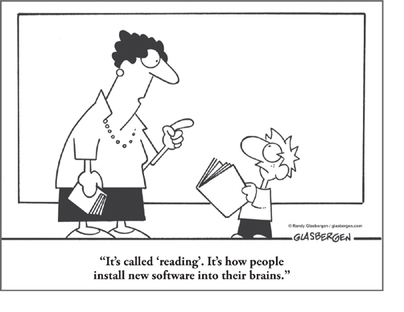

Thirty years ago, a high-potential manager sat in a training class at Crotonville, General Electric’s world-class corporate university. He listened as my father, Ned Herrmann, then head of GE’s Management Education, discussed research that he was developing on how the brain affects day-to-day operations.
Struggling to find the relevance of this information, the manager commented, “Learning about the brain is certainly interesting. But Ned,” he went on, “what does the brain have to do with managing?”
An appropriate response? “Well, in your case, everything!”
With the initial publication of The Whole Brain Business Book in 1996, Ned opened the eyes of many more managers and leaders around the world to the impact and applications of Whole Brain Thinking for every aspect of business and performance.
I remember vividly those initial experiments he conducted demonstrating specialization in the brain—primarily because they involved wiring me up to an electroencephalograph (EEG) for testing. Such was the life of someone who literally grew up with Whole Brain Thinking.
Since that time, there’s been an explosion of new brain research, generating powerful new insights into how we can apply Whole Brain Thinking to drive business results. The process of updating this book has given me the opportunity to translate how each reader can apply this new knowledge in very practical ways to improve his performance on the job and at home, without having to be wired up to the EEG, as I once was.
As I was growing up, I was lucky enough to observe all the ways in which Whole Brain Thinking could be applied, with useful and often breakthrough applications in everyday experiences, from the personal to the professional and every point in between. This updated edition of The Whole Brain Business Book captures many new stories and best-practice examples to demonstrate the multitude of ways in which leaders, managers, individuals, and entire organizations can unleash their full thinking capacity and get better results across the board.
In fact, the wide applicability of the Whole Brain concept means that the richness, depth, and variety of these examples have grown exponentially over the past several decades, reinforcing the power and practicality of Whole Brain Thinking in business. There is now a broad community of thousands of Whole Brain Thinking practitioners and business leaders who are taking Ned’s elegantly simple yet scientific approach and applying it in ways that even he may not have imagined, giving us a broad array of organizations and functional areas to draw from in this new edition: workplace productivity, strategy experts, organization development leaders, video game developers, sales managers, magazine designers, call center managers, and a host of others, representing nine out of ten of the Fortune 100.
And one other note: you’ll see that every chapter includes a cartoon illustrating that chapter’s essence. One of the most important things I learned from my father is how effective and brain-friendly humor can be.
Carrying my father’s work into the twenty-first century since his passing in 1999 has been a fascinating journey. The business environment has changed in so many ways since The Whole Brain Business Book was first published, and so has our understanding of the brain, and how Whole Brain Thinking can and does fuel business results in every industry. It was time for an update—to acknowledge the realities of today’s workplace and give readers proven and practical new ways to get the most from their most precious currency and most valuable tool: brainpower.
Ann Herrmann-Nehdi